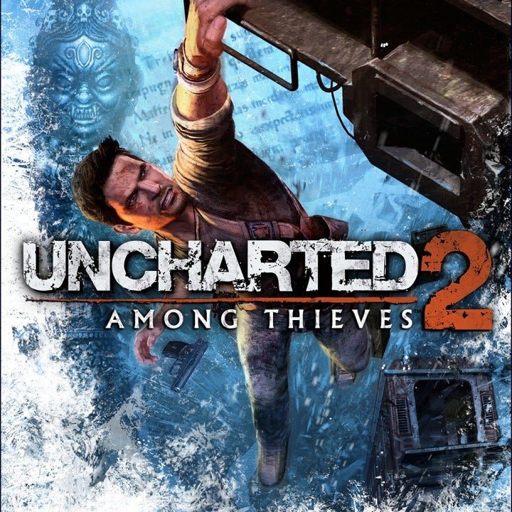

Select A Uncharted!
Select A Game Down Below!
Summary
"Uncharted 2: Among Thieves" is the second installment in the Uncharted series, developed by Naughty Dog. The game follows Nathan Drake as he embarks on a globe-trotting adventure to uncover the mystery of Marco Polo's lost fleet and the fabled Cintamani Stone. Set against the backdrop of exotic locales like Nepal and Borneo, Drake navigates treacherous environments, battles mercenaries, and faces off against a ruthless warlord named Lazarevic. Along the way, he reunites with old allies like Victor Sullivan and encounters new characters like Chloe Frazer. The game is praised for its engaging storyline, thrilling set pieces, and improved gameplay mechanics, solidifying its place as one of the greatest action-adventure games of all time.
More Detail
"Uncharted 2: Among Thieves" expands on the success of its predecessor, delivering a thrilling and cinematic gaming experience. Here's a more detailed overview: Plot: The story picks up with Nathan Drake being approached by old friend Harry Flynn and ex-girlfriend Chloe Frazer to embark on a quest for Marco Polo's lost fleet, rumored to contain the Cintamani Stone—a legendary artifact said to grant immense power. As Drake delves deeper into the mystery, he discovers that he's not the only one after the treasure. Serbian war criminal Zoran Lazarevic and his ruthless mercenaries are also on the hunt, leading to a race against time across exotic locations like Istanbul, Nepal, and Borneo. Gameplay: Building upon the foundation laid by the first game, "Among Thieves" refines and expands the gameplay mechanics. Players engage in a mix of exploration, platforming, puzzle-solving, and third-person shooting. Drake must navigate perilous landscapes, solve intricate puzzles, and engage in intense firefights with Lazarevic's army. The game introduces new mechanics such as stealth takedowns and improved hand-to-hand combat, adding depth to the gameplay experience. Characters: The game features a memorable cast of characters, both old and new. Nathan Drake remains the charismatic and resourceful protagonist, known for his quick wit and daring exploits. Victor Sullivan, or Sully, returns as Drake's mentor and partner, providing guidance and comic relief. Chloe Frazer is a cunning and enigmatic ally with a complicated history with Drake. New characters like Harry Flynn, a former associate turned antagonist, and Elena Fisher, Drake's former love interest, also play significant roles in the story. Themes: "Among Thieves" explores themes of betrayal, redemption, and the consequences of greed. Drake is forced to confront his own moral compass as he navigates a world filled with deception and double-crosses. The game also delves into the dark side of human nature, as Lazarevic's quest for power drives him to commit atrocities in his pursuit of the Cintamani Stone. Visuals and Presentation: Like its predecessor, "Among Thieves" boasts stunning visuals and cinematic presentation. The game features breathtaking environments, detailed character models, and seamless transitions between gameplay and cutscenes. The narrative unfolds through a series of cinematic set pieces and scripted sequences, immersing players in a thrilling adventure reminiscent of a Hollywood blockbuster. Legacy: "Uncharted 2: Among Thieves" is widely regarded as one of the greatest video games of all time. It received universal acclaim from critics and players alike, praised for its engaging storyline, memorable characters, and polished gameplay. The game won numerous awards, including several Game of the Year accolades, and solidified the Uncharted series as a flagship franchise for the PlayStation platform. Its success paved the way for future installments and cemented Naughty Dog's reputation as a premier developer in the gaming industry.